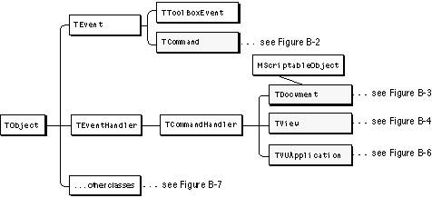
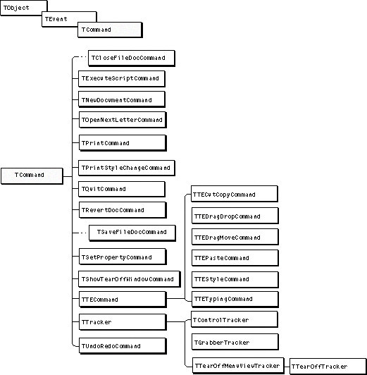
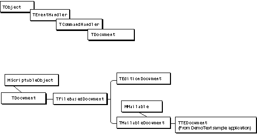
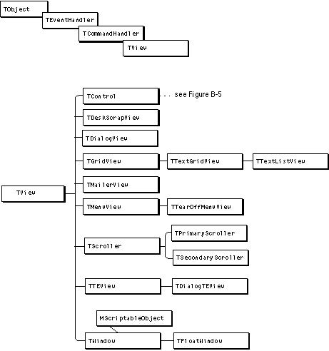
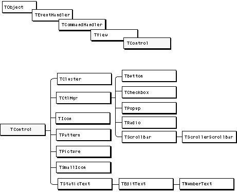
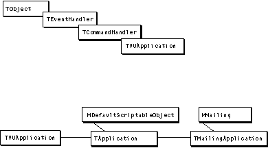
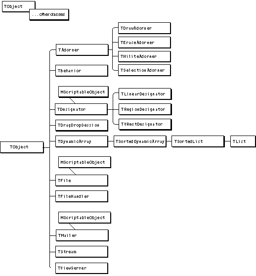
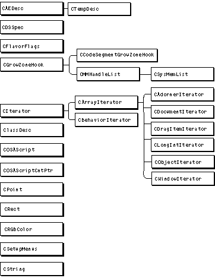

Appendix B - Organization of the MacApp
This appendix provides diagrams showing the class hierarchy for key
Class Library
MacApp classes.
For a comprehensive listing of MacApp's classes, see the MacApp Class and Method Reference or examine MacApp's source code with a source code browser.
Figure B-1 shows commonly used MacApp classes that descend from
TObject, includingTEvent,TCommand,TEventHandler, andTCommandHandler.TObjectis the base class for most MacApp classes. It contains fields and methods that provide services required by most objects. TheTObjectclass is described in detail in Chapter 2, "Basic Operations."The
TEventclass provides fields and methods for working with events received from the operating system. TheTCommandsubclass supports command operations that can be done, undone, and redone. TheTEventHandlerclass and its subclassTCommandHandlerprovide fields and methods for classes that know how to create command objects to respond to events. All of these classes are described in detail in Chapter 5, "Events and Commands."
MScriptableObjectis a mixin class that provides facilities for working with scripts and responding to Apple events. MacApp's scripting support is described in Chapter 6, "Scripting."MacApp's command, document, view, and application classes are shown in subsequent illustrations.

MacApp supplies a number of command classes (Figure B-2), both to provide services and to serve as superclasses for commands you define.

Figure B-3 shows MacApp's document classes.
MacApp provides the
TFileBasedDocumentclass for working with disk files, theTMailableDocumentclass to provide support for PowerTalk mailers, and theTEditionDocumentclass to support publish and subscribe. TheTTEDocumentclass, from the DemoText sample application, demonstrates many text-editing features, as well as the use of drag and drop and PowerTalk mailers. You can read about MacApp's document classes in Chapter 7, "Document Handling."
MacApp provides many view classes for displaying data and receiving user input. You can read about them in Chapter 8, "Displaying, Manipulating, and Printing Data." Figure B-4 shows these view classes.

MacApp's control view classes (Figure B-5) implement many standard user interface items, including buttons, checkboxes, and scroll bars. You can also define subclasses of these classes for your custom controls. For more information see Chapter 8, "Displaying, Manipulating, and Printing Data."
Figure B-5 Control view classes

There is one global application object in each MacApp application. The application object serves many purposes, including receiving and dispatching most events from the operating system.
TVUApplicationis an abstract class that provides Virtual User support for automated testing.TApplicationprovides the bulk of application operations, whileTMailingApplicationadds support for PowerTalk mailers. Figure B-6 shows MacApp's application classes.Figure B-6 Application classes

Figure B-7 shows many additional classes that descend from
TObject. These classes are described in various places throughout this book.
MacApp provides a number of C++ utility classes to perform operations such as object comparison, string processing, and manipulation of data types including points, rectangles, drag-and-drop flavor flags, Apple event descriptors, and RGB colors. A sampling of these classes is shown in Figure B-8.
Figure B-8 C++ utility classes
